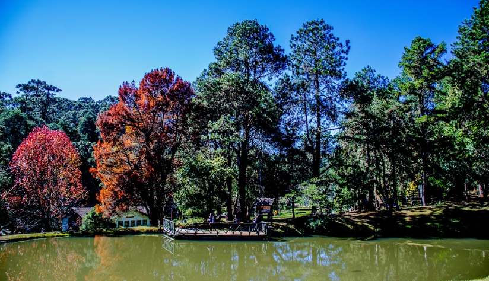
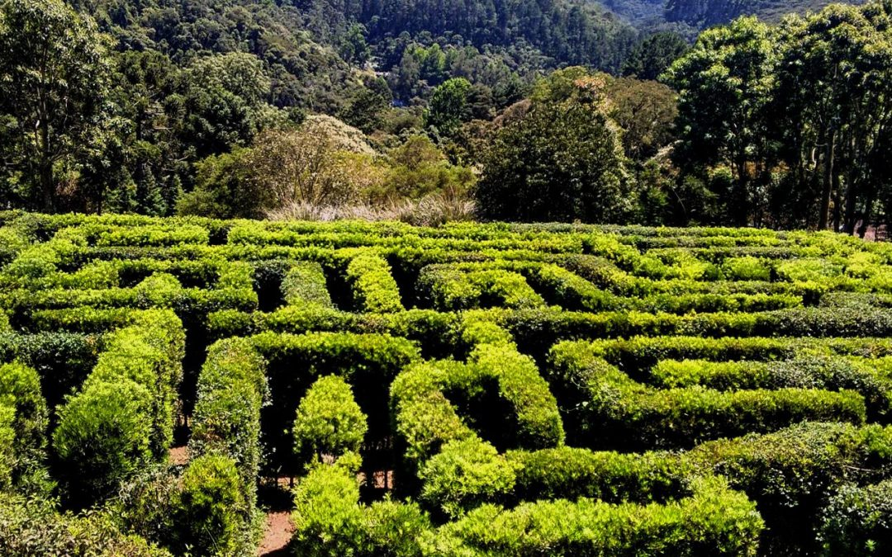

PONTOS TURÍSTICOS - CAMPOS DO JORDÃO
Parque Estadual Horto Florestal
O Parque Estadual dos Mananciais de Campos do Jordão é uma unidade de conservação brasileira de proteção integral da natureza localizada no município de Campos do Jordão, no estado de São Paulo. Conta com 8,3 hectares de área preservada. É um passeio onde o turista fica em contato direto com a natureza, lindas paisagens com lagos, trilhas e bosques. Sua infraestrutura oferece área de ginástica, restaurante e loja de artesanato. É um dos pontos turísticos de Campos do Jordão que não pode deixar de fora do seu roteiro de passeios.
Parque Amantikir
O Amantikir é um parque com jardins temáticos inspirados em diferentes paisagismos de outros países como Japão e Canadá. E o destaque é o labirinto criado de arbustos. O Parque Amantikir ou Amantikir Jardins, é um parque urbano composto por um conjunto de jardins e diversos pontos de interesse. Situado no município de Campos do Jordão, a 180 quilômetros da cidade de São Paulo.
